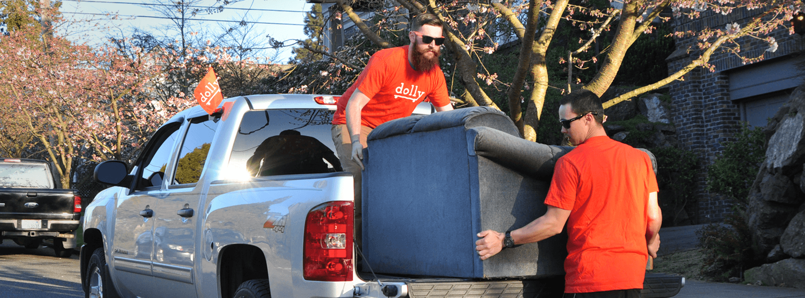

My name is Chad Wittman
I'm a Product guy who likes building things that matter
Speaking
I'm always interested in sharing my knowledge and experiences through speaking. I've had the benefit of studying Facebook's news feed for many years and the opportunity to share my learnings. Speaking about Facebook's news feed has brought me around the country and world for different speaking events. If you're interested in having speak at an event, please reach out!
About Me
I started my first business at age 14, selling custom hot air balloon screensavers. I've been hooked on the entrepreneurial path ever since. During college, I built a custom college oriented t-shirt business that leveraged Facebook (pre-advertising era) marketing. Witnessing and harnessing the power of Facebook's news feed I was hooked on "solving" it.
Determined to leverage the news feed to the best of my ability, I set on a path to build the analytics needed to harness and monitor the news feed. This lead to my first real startup: EdgeRank Checker. We bootstrapped the company and were able to achieve profitability in 2 months of launching. EdgeRank Checker would go on to be acquired by Socialbakers in 2014.
The current chapter of my career focuses on Dolly. During a hellacious move in downtown Chicago, it dawned on me that we could build a marketplace connecting pickup truck owners with people needing help moving stuff. Dolly was born. Dolly was launched in mid-2014 and has received a $1.7M seed round.
Roles
Past
- VP of Social @ Zgraph
- Founder & President @ EdgeRank Checker
Current
- Co-Founder & VP of Product @ Dolly
Side Projects
Contact
If you'd like to contact me for any reason (other than solicitation), feel free to reach out. I love to talk shop and also help people along the way. I've had so much help over my life, I look to give back whenever I'm able. Looking forward to connecting!